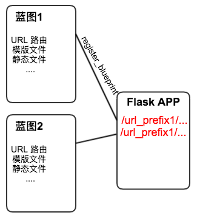

Flask，从简单开始
前段时间用 Flask 搭建了一个公司内部用的算法工具，对于这类工具，我对 Web 框架只有两个要求：
- 框架好理解，学习成本低
- 不要写多余的代码
从这两点可以看出，我不仅是个精神上懒惰的人，而且是个身体上懒惰的人。PHP 我是不想再碰了，它提供的“效率“是以语言设计的灾难为代价的。
Python 用着还行，所以我选了轻量级框架 Flask，从结果来看，它符合我上面的两个要求，且最终效果令人满意。作为项目的总结，本文就梳理一下如何用 Flask 开发 Web 应用，从最简单的开始。
Python Web 应用是什么
一个 Python Web 应用包含两个部分：
- 应用的开发：实现 Web 应用的逻辑，读数据库，拼装页面，用户登录
- 应用的部署：将 Web 应用跑起来，多线程，多进程，异步，监听端口，所有服务器该做的事情
我们希望用各种不同的技术来开发应用，用各种不同的服务器程序来跑应用，这就要求开发和部署都遵循一个统一的 通信接口，这个接口叫做 Web Server Gateway Interface，简称“WSGI”。
WSGI 接口就是一个满足特定要求的函数
def application(environ, start_response):
“”“
environ：包含所有 HTTP 请求信息的 dict
start_response：发送 HTTP 响应的函数
”“”
start_response('200 OK', [('Content-Type', 'text/html')])
return '<h1>Hello, web!</h1>'
只要提供了这个接口，服务端程序就能将它跑起来，不需要关心应用代码如何组织，采用何种框架。
关于 WSGI 接口，可以参考以下三篇文章：
WSGI 完整说明：PEP 333 : Python Web Server Gateway Interface v1.0.1
WSGI 简单说明 廖雪峰的官方网站
Python Web 应用概览：The Hitchhiker's Guide To Python
Flask Web 应用开发
本节介绍 Flask Web 框架的使用。
基本形态：URL 路由，获取请求，构造响应
Flask 作为一个 Web 框架，它遵循 WSGI 接口，并且在其之上整合了 Werkzeug 的 URL 路由以及 WSGI 工具库，SQLAlchemy 的数据库访问，jinja2 的模版渲染等功能。
但它也是一个轻量级框架，Flask 应用最基本的形态只涉及 URL 路由，不需要配置任何东西就能工作。
from flask import Flask
app = Flask(__name__)
@app.route("/")
def hello():
return "Hello World!"
Flask 初始化使用的第一个参数的含义是 “import path”，代表当前模块的 import 名称，该参数的作用是 帮助 Flask 自动找到当前文件的绝对路径 ，从而确定项目中各个资源文件的路径。很多 Web 框架都有这么一个 Root Path 参数，只不过 Flask 做得更漂亮。
app 对象实现了 WSGI 接口，我们现在看看这个怎么实现的。打开 Flask 类的代码，地址 https://github.com/pallets/flask/blob/master/flask/app.py ：
def wsgi_app(self, environ, start_response):
# 构造请求上下文
ctx = self.request_context(environ)
error = None
try:
try:
# 将请求上下文推入栈中，这部分后续会解释
ctx.push()
# URL 路由，产生结果，构造 response
response = self.full_dispatch_request()
except Exception as e:
error = e
response = self.handle_exception(e)
except:
error = sys.exc_info()[1]
raise
return response(environ, start_response)
finally:
if self.should_ignore_error(error):
error = None
ctx.auto_pop(error)
def __call__(self, environ, start_response):
"""Shortcut for :attr:`wsgi_app`."""
return self.wsgi_app(environ, start_response)
我们发现，Flask 类实现了 __call__ 魔术方法，所以能像函数一样使用，并且符合 WSGI 规范。实际的逻辑在 wsgi_app 函数中，基本上所有 Flask 的框架功能都是从这个函数中延伸出去的。此外，我们通过函数装饰器，往 app 里注册从 URL 到处理逻辑的映射，而 URL 路由使用了 Werkzeug 库的 werkzeug.routing.Map 类，大家可以在同一个文件中搜索并阅读。
现在，我们使用 Flask 内置的 Debug 服务器，让应用跑起来，假设文件名叫
hello.py。执行FLASK_APP=hello.py flask run，接着，访问http://localhost:5000/就能看到 “Hello World!”的输出了。
现在，我们给 URL 路径带上参数，把它放到 hello2 函数里：
@app.route("/hello2/<name>/<age>/")
def hello2(name, age):
return "Hello! " + name + ", you are " + age + " years old."
通常我们需要访问请求的 GET 或 POST 参数，此时，使用 Flask 的 request 对象。注意到它是一个“全局对象”，但它始终包含着当前请求的所有信息，这种全局对象的设计让 Flask 写起来十分简单顺手。
from flask import request
@app.route("/hello3/", methods=['POST', 'GET'])
def hello3():
# 获取 get 参数
param1 = request.args.get('param1')
# 获取 post 参数
param2 = request.request.form['param2']
到这一步，你已经可以用 Flask 实现一个 Web Service 了，简单直接，当然很多有用的知识点我没写，例如 after_request 装饰器等，你可以在 http://flask.pocoo.org/snippets/ 里找到很多有用的代码段！当你需要更复杂的功能时，可以慢慢往里添加，这就是 Flask 的口号 “one drop at a time“ 的含义，一点一滴地往应用里增加功能。
Flask 很简单，但它最难以理解的莫过于 Context 机制，个人觉得有点过度设计，日常使用的话无需学习它，但如果你一定要了解，可以看看下面的资料：
Flask 的 Context 机制
Flask 作者的一个 Talk，“Flask for Fun and Profit” 里面也讲了 Context 机制 Youtube 链接
Stackoverflow 上的一个问题，为什么 Flask 要用 Context Stack
拼装页面：jinja2 模版
很多时候你要的不止是一个 Web Service，而是一个网站，这就需要在代码中拼装出一个 HTML 页面。 Flask 默认使用 jinja2 作为模版引擎 帮助我们生成网页。
基本每个模版引擎都包含了一个模版语言，这部分内容请自行参考 jinja2 的文档，这里提一下它与 Flask 相关的部分。
使用方式
首先在项目目录中新建 templates 目录，在其中建立一个 hello.html 文件，内容为
<!DOCTYPE html>
<html lang="en">
<head>
<title>Flask Template</title>
<meta charset="utf-8">
</head>
<body>
<p>{{ greetings }}</p>
</body>
</html>
接着，使用 Flask 提供的 render_template函数渲染模版，并将渲染结果返回。
from flask import render_template
@app.route('/hello4')
def hello4():
# 将数据传给模版 hello.html
return render_template("hello.html", greetings="Hello world!")
模版搜索路径
大家注意到 templates 是 Flask 默认搜索模版的路径，如果你想修改这个路径，可以在初始化 Flask（或者 Blueprint，后面会提到）对象时，指定自己的路径
app = Flask(__name__, template_folder='my_templates')
组织更加复杂的应用：蓝图
现实中的项目往往带有多个模块，尽管模块之间总是要共享一些页面布局和资源，它们在概念上基本“相互独立”。如果把代码、模版全部揉在一起，整个项目结构混乱，难以维护。Flask 提供了一种组织项目的思路：蓝图（Blueprint）。
蓝图与 Flask App 类似，它可以注册自己的模版目录，静态文件目录，URL 路由，装饰器钩子（例如 before_request)。蓝图上注册的所有东西需要被 app.register_blueprint 函数统一注册到全局 app 对象中才能生效。此外，蓝图还可以拥有自己的 URL 前缀用以区分模块。如下图所示：

有了蓝图后，我们可以按照下面的结构组织项目
app/
mod_users/ -- user 模块
templates/
index.html
__init__.py
users.py
mod_camera/ -- camera 模块
templates/
index.html
camera.py
__init__.py
templates/
base.html -- 项目基础模版
app.py -- 项目主文件，注册以上所有蓝图
static／ -- 项目静态资源
用过其它传统 Web 框架的朋友可能会将蓝图与所谓的 “MVC架构”做对比，实际上这两者是没有任何关系的。蓝图并不算一种架构模式，它存在的意义是帮助项目更好地组织文件，如果你愿意，可以在蓝图内部开发一个自己的 MVC 框架。
总而言之，Flask 没有将任何一种设计模式强加于用户，只在用户需要的时候提供帮助，这也是我喜欢 Flask 的一个原因 ：）。
阅读以下文章，完全掌握蓝图
蓝图：官方文档
如何组织大型 Flask 应用
绕过蓝图的坑：同名 template
使用 gunicorn 部署 Python Web 应用
应用开发完毕后，就可以部署上线了，任何支持 WSGI 的 Web 容器都能运行 Flask，包括：uWSGI，gnicorn 等，具体参考后面的文档。这里，我们使用 gunicorn 来部署应用：
pip install gunicorn
gunicorn -w 4 -b 127.0.0.1:4000 hello:app
既然是简单的 Web 开发框架，当然要选最轻松的部署方式啦，反正我是个懒人。